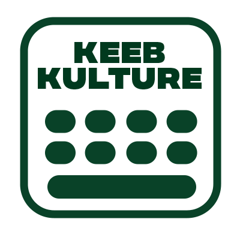
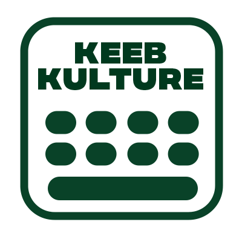
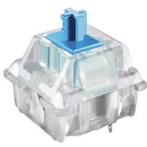
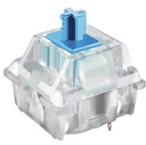

Keyboard Kulture.
Everything about mechanical keebs.
Keeb History
Keyboards are seen to be a core peripheral device to a computer system. However, the user’s comfort was not a priority. Membrane keyboards were the most used model in the early 2000’s due as they're easier to manufacture. However, due to being thine and having low press distance, people missed its sensory feedback. As a response, manufacturers started producing mechanical keyboards, returning the sound and feel that users love.
In the last few years, mechanical keyboards have recently risen in popularity thanks to the pandemic bringing many activities online. As workers, gamers, and students tried to find ways to make their remote experience more comfortable, famous figures such as Taeha Types, Glarses, Frank Passalacqua, made the hobby even more friendly to beginners.
To choose your perfect keyboard, there are 3 subcategories you should look for:
Size

Switches

 
